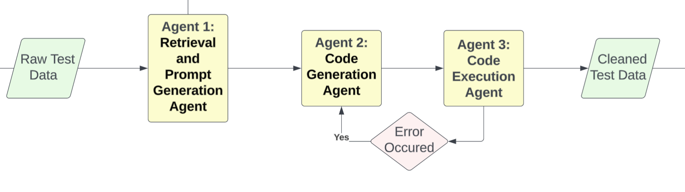

Multi-Agent System
Multi-Agent Systems (MAS) are systems composed of multiple interacting agents, where each agent is an autonomous entity capable of perceiving its environment, making decisions, and taking actions independently or in collaboration with other agents.These agents can cooperate, compete, negotiate, or coordinate to achieve individual or collective goals 1.
In this project, we utilized cooperative multi-agent system, and each agent will work cooperatively, and indepently focus on its assigned task. 2 Three agents will be implemented in order to clean up the e-commerce datasets: retrieval and prompt generation agent, code generation agent, and code execution agent. We will use the OpenAI API 3 , gpt-4o model, for all the processes.

Retrieval and Prompt Generation Agent
The retrieval agent is responsible for format detection, schema extraction, contextual retrieval via FAISS and returns a structured context prompt. When a dataset is fed to the agent, it will identify whether it is CSV, JSON, XML, or XLSX using filename suffixes. From here, the file will be parsed to extract structural metadata like column names, types, and sample rows. The agent will query the FAISS vector database for sample data schemas, clean-up rules, and prompt examples for transformation. Eventually a prompt will be generated with matched schema, transformation rules, and examples to be consumed by the generation agent. This framework will be implemented through LangChain Tool abstraction.
Code Generation Agent
The code generation agent is responsible for code generation. The agent takes the prompt from the first agent and generates python code for cleaning and transforming the input data.
Code Execution Agent
This agent runs the generated code from the second agent to clean the raw data and save the cleaned dataset in the file path. If an error occurs, the error message will be sent back to the second agent to regenerate code, and this agent will run the newly generated code again until it saves the cleaned dataset successfully.
Example Usage
🔍 STAGE 1: Analyzing data file and generating cleaning instructions…
✅ Cleaning instructions generated successfully!
================================================================================ CLEANING INSTRUCTIONS: To clean and preprocess the dataset makeup.csv, follow these detailed instructions:
- Handling Missing Values
- Prime Column: There is one missing value in the
Primecolumn. Since this column indicates whether a product is available with Amazon Prime, you can fill the missing value with “Not Available” or “No” if the context allows, assuming non-Prime availability.
- Detecting and Treating Outliers
- Star Ratings: The
starcolumn has a minimum value of 2.8, which might be an outlier given the mean of 4.26. Review these entries to ensure they are valid. If they are valid, retain them; otherwise, consider removing or flagging them for further review. - Order and Page Number: These columns seem to have reasonable ranges given the context (order of appearance and page number), so no immediate action is needed unless business logic dictates otherwise.
- Data Type Issues and Conversions
- ReviewsCount: Convert this column from
objecttoint64. First, remove commas from the numbers and then convert. - Price: Convert this column from
objecttofloat64. Remove the dollar sign$before conversion. - Prime: Convert this column to a boolean type where “Amazon Prime” is
Trueand any other value or missing isFalse.
- Format Standardization
- 当前时间: This column is already in a datetime format, but ensure it is recognized as such by converting it to
datetime64[ns]if necessary. - Price: Ensure all prices are in a consistent currency format, assuming USD based on the dollar sign.
- Categorical Encoding
- Key Words: Convert this column to a categorical type. If needed for modeling, use one-hot encoding.
- Prime: As mentioned, convert to boolean for easier analysis.
- Text Fields Cleaning and Normalization
- Title: Normalize text by converting to lowercase to ensure consistency in text analysis.
- Title URL: This column seems to be a URL and might not need cleaning unless used for specific analysis.
- Identifying Potential Duplicates
- Duplicate Rows: The dataset reports zero duplicate rows. However, ensure there are no logical duplicates by checking for identical
asinvalues, as this should be unique for each product.
- Renaming Columns for Clarity
- 当前时间: Rename to
current_timefor consistency and clarity. - Title URL: Rename to
product_urlfor clarity.
- Derived Features
- Review to Price Ratio: Create a new feature by dividing
ReviewsCountbypriceto understand the review density relative to price. - Star to Price Ratio: Create a new feature by dividing
starbypriceto assess value for money based on ratings. - Is Prime: As a boolean feature, this can be used directly in models to understand the impact of Prime availability.
Additional Steps：
- Data Validation: After cleaning, validate the data types and check for any remaining inconsistencies.
- Documentation: Document all changes made to the dataset for reproducibility and future reference.
By following these steps, you will ensure the dataset is clean, consistent, and ready for analysis or modeling.
================================================================================
🔧 STAGE 2: Generating data cleaning code based on instructions…
✅ Cleaning code generated successfully!
💾 Cleaning code saved to /Users/sherryqin/Desktop/agent/clean_makeup_attempt1.py
================================================================================
⚙️ STAGE 3: Executing cleaning code (attempt 1/4)…
Executing cleaning code… Warning: No main() function found in generated code. Trying subprocess execution… Error executing cleaning code: STDOUT: STDERR: /Users/sherryqin/Desktop/agent/clean_makeup_attempt1.py:13: FutureWarning: A value is trying to be set on a copy of a DataFrame or Series through chained assignment using an inplace method. The behavior will change in pandas 3.0. This inplace method will never work because the intermediate object on which we are setting values always behaves as a copy.
For example, when doing ‘df[col].method(value, inplace=True)’, try using ‘df.method({col: value}, inplace=True)’ or df[col] = df[col].method(value) instead, to perform the operation inplace on the original object.
df[‘Prime’].fillna(‘No’, inplace=True)
Traceback (most recent call last):
File "/Users/sherryqin/Desktop/agent/clean_makeup_attempt1.py", line 73, in <module>
clean_makeup_data(filepath)
File "/Users/sherryqin/Desktop/agent/clean_makeup_attempt1.py", line 21, in clean_makeup_data
df['ReviewsCount'] = df['ReviewsCount'].str.replace(',', '').astype('int64')
^^^^^^^^^^^^^^^^^^^^^^^^^^^^^^^^^^^^^^^^^^^^^^^^^^^^^^^
File "/Users/sherryqin/anaconda3/lib/python3.11/site-packages/pandas/core/generic.py", line 6643, in astype
new_data = self._mgr.astype(dtype=dtype, copy=copy, errors=errors)
^^^^^^^^^^^^^^^^^^^^^^^^^^^^^^^^^^^^^^^^^^^^^^^^^^^^^^^
File "/Users/sherryqin/anaconda3/lib/python3.11/site-packages/pandas/core/internals/managers.py", line 430, in astype
return self.apply(
^^^^^^^^^^^
File "/Users/sherryqin/anaconda3/lib/python3.11/site-packages/pandas/core/internals/managers.py", line 363, in apply
applied = getattr(b, f)(**kwargs)
^^^^^^^^^^^^^^^^^^^^^^^
File "/Users/sherryqin/anaconda3/lib/python3.11/site-packages/pandas/core/internals/blocks.py", line 758, in astype
new_values = astype_array_safe(values, dtype, copy=copy, errors=errors)
^^^^^^^^^^^^^^^^^^^^^^^^^^^^^^^^^^^^^^^^^^^^^^^^^^^^^^^^^^
File "/Users/sherryqin/anaconda3/lib/python3.11/site-packages/pandas/core/dtypes/astype.py", line 237, in astype_array_safe
new_values = astype_array(values, dtype, copy=copy)
^^^^^^^^^^^^^^^^^^^^^^^^^^^^^^^^^^^^^^
File "/Users/sherryqin/anaconda3/lib/python3.11/site-packages/pandas/core/dtypes/astype.py", line 182, in astype_array
values = _astype_nansafe(values, dtype, copy=copy)
^^^^^^^^^^^^^^^^^^^^^^^^^^^^^^^^^^^^^^^^^
File "/Users/sherryqin/anaconda3/lib/python3.11/site-packages/pandas/core/dtypes/astype.py", line 133, in _astype_nansafe
return arr.astype(dtype, copy=True)
^^^^^^^^^^^^^^^^^^^^^^^^^^^^
ValueError: cannot convert float NaN to integer❌ Execution failed. Error: Error executing cleaning code:
STDOUT:
STDERR: /Users/sherryqin/Desktop/agent/clean_makeup_attempt1.py:13:
FutureWarning: A value is trying to be set on a copy of a DataFrame or Series through chained assignment using an inplace method.
The behavior will change in pandas 3.0. This inplace method will never work because the intermediate object on which we are setting values always behaves as a copy.
For example, when doing ‘df[col].method(value, inplace=True)’, try using ‘df.method({col: value}, inplace=True)’ or df[col] = df[col].method(value) instead, to perform the operation inplace on the original object.
================================================================================
Error Occured - Regenerating Code
🔄 Attempting code regeneration (1/3)…
🔧 STAGE 2: ReGenerating data cleaning code based on instructions…
✅ Cleaning code regenerated successfully!
💾 Cleaning code saved to /Users/sherryqin/Desktop/agent/clean_makeup_attempt2.py
⚙️ STAGE 3: Executing cleaning code (attempt 2/4)…
Executing cleaning code… Warning: No main() function found in generated code. Trying subprocess execution…
================================================================================
✅ Cleaning completed successfully! Cleaned data saved to cleaned_makeup.csv
🎉 The complete data cleaning pipeline finished successfully! Original data: makeup.csv
Cleaned data: cleaned_makeup.csv
DATA SUMMARY:
Rows: 1006
Columns: 13
Missing values: 145